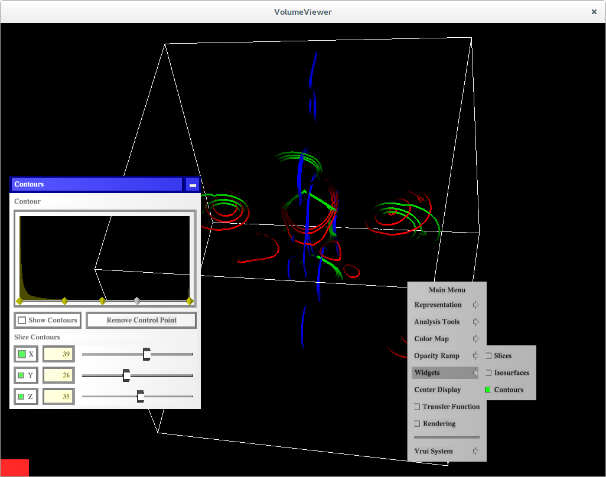

Welcome to VolumeViewer
This application demonstrates use of the new vtkRenderingExternal module for VRUI and VTK integration.
Supported Operating Systems
- Linux
- Mac OSX
Prerequisites
NOTE: To build VolumeViewer along with all its prerequisites, simply build the superbuild from VolumeViewerSuperbuild
VolumeViewer application requires the following software to be built and installed.
Clone VolumeViewer source
The VolumeViewer application can be built from source obtained using one of the download links on this page or using the commandline as follows:
$ git clone https://github.com/VruiVTK/VolumeViewer.git
The above command creates a directory VolumeViewer with the source code.
Configure Instructions
Configure the build using CMake.
Set the following CMake variables:
* VRUI_PKGCONFIG_DIR - Path to pkgconfig directory of your VRUI installation
* VTK_DIR - Path to the VTK build directory
Once all the required variables are set, press generate to generate the makefile.
Build Instructions
Build using the make tool.
$ make
Run VolumeViewer
The build step will create an executable VolumeViewer under the build directory that can be used to run the application. To get usage instructions for the application:
$ ./VolumeViewer -help
To render a VTK image data (.vti) file, use the '-f' or '-fileName' argument.
$ ./VolumeViewer -f neghip.vti
If no arguments are provided, the application will bring up a VRUI window with a sample vtkImageData rendered at its origin.
$ ./VolumeViewer
Sample Configuration Files
A couple of sample configuration files are added to the config
directory.
To use the sample files simply copy the files to the etc directory of
your VRUI installation.
Make sure to backup your existing configuration files before copying the sample ones in.
The sample configuration files are tested to work with an OptiTrack tracker
with a VRPN server of hostname OptiTrackServer. The server uses the
Rigid Body Module to configure two rigid bodies:
- Head
- Wand
3dtv(VRDevices.cfg,
Vrui.cfg) section.
To run the device daemon,
$ /bin/VRDeviceDaemon -rootSection 3dtv To run the application,
$ ./VolumeViewer -rootSection 3dtvScreenshots
The following are some screenshots of the application that demonstrate its various aspects.
Notice that the application calculates the bounds of the dataset and draws an outline around it. The outline can be turned off in the Representation menu.
Representation Menu
Analysis Tools
The Analysis Tools are setup to work with the VRUI locator tool. To use one of the analysis tools, toggle the radio button next to it. Hit the button on the Wiimote (or the wand device being used) that you would like to assign the selected analysis tool to. Since, the button is not assigned to any tool right now, it will bring up the default Vrui Menu as shown in the below figure.
Select the 6-DOF Locator. This assigns the selected analysis tool to the button pressed. From now, on this button can be used to invoke the analysis tool it is assigned to.
Color Map
This sub-menu can be used to select a different color map for the dataset.
Widgets Menu
Slices
Slice through the dataset using X, Y and Z slices. One can also change the color map for the slices.
Isosurfaces
Create 3 different isosurfaces and color them independently.
Contours
Create any number of contours around the dataset. This dialog also offers the ability to slice through the contoured dataset using X, Y and Z planes.

Transfer Function Editor
Helps change the transfer function for the volume visualization.
Rendering
Change the opacity of the vtkActor